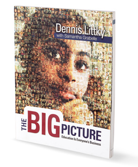

New to this Forum of Educators,
I have been excited by recent sessions experienced at the NAIS conference in Orlando, FL. I met the starters of EdCamp, and felt the buzz in the room generated by everyone harnessing technology in the classroom to energize both teachers and students alike. I attended a session by Milton Chen and I am reading his book titled Education Nation. The candidates in the room shared as much as they could by just chatting. What we are learning from each other is the way we can find leadership. It is not coming from any one source. I am finding Twitter posts a fantastic source from Edutopia, BrainPickings and more. It's a joy to learn with thousands of educators and know that we are not confined to our four walls. It is time to go beyond!
What are you reading?


I'm not reading it yet, but it's been sitting on my desk making me feel guilty for months because I know it's a deep read but I really need to crack this puppy open. It's called Getting to Maybe: How the World is Changed, by Westley, Zimmerman & Patton. It's about making the impossible happen.

A book called, "Nonsense: Red Herrings, Straw Men and Sacred Cows; How We Abuse Logic In Everyday Language" . It is a study of verbal logic fallacies.

I'm reading Now You See It by Cathy Davidson, about adapting school, work, and ourselves to the 21st century landscape. I see a lot of parallels to LCL for sure.

Currently reading Design: Make: Play - Growing the next generation of STEM innnovators.
A lots of good thought which are really usefull for my design study project, but also a whole other way of thinking that i'm used to from the danish free school thoughts.

I am reading The Luminaries by Eleanor Catton. It has nothing to do with education technology, won the Man Booker Prize 2013 and is simply amazing.

quite often I read more books at the same time. Currently I'm reading "Finding Moonshine: A Mathematician's Journey Through Symmetry" from Marcus Du Sautoy and Robotic short stories from Isaac Asimov

I am currently reading Enhancing the Art and Science of Teaching with Technology, I follow several twitter feeds relating to instructional technology, math and computer science including iNACOL, Edutopia, EdWeek and Ted Ed. I happen to also be finishing The Princes of Ireland- but that is an unrelated pleasure book 

My recent journey into this way of teaching started with Turtles, Termites and Traffic Jams by the fearless leader of this course. Then everything just snowballed. Here is a link to some great books that have inspired me in the past year or so. Presently, I have The Big Picture on my bedside table. I also read a lot from the site Mind/Shift.


I am reading Pedagogy of the Oppressed by Paulo Freire. Very pragmatic, very emotional, very original!

I am reading Shirley Turkle's Alone Together. I enjoyed her TED talk and am getting into her book now.

At the moment, I'm re-reading Open: How We'll Live, Work and Learn in the Future by David Price
Highly recommended!
How to Win: The Argument, The Pitch, The Job, The Race and it covers the importance of telling stories.

Very much enjoyed reading Where Good Ideas Come by Steven Johnson. Felt like a natural history book of the creation of ideas. Still quoting it at times.

Too many at once: Go Put Your Strengths to Work, Energy Bus, Sold by Patricia McCormick, Mindset, Visit Sunny Chernobyl, etc.
I want to add one more that I never seem to stop reading: The Third Teacher. It's on my desk at school and falling apart due to use. It's had a profound impact on the way I look at the physical surroundings in schools. I consulted it to order furniture for our school library, and I've seen increased student collaboration because of that new furniture.

Reading a couple of design books, but the latest is: Change by Design: How Design Thinking Transforms Organizations and Inspires Innovation Hardcover by Tim Brown. See it on Amazon.
James, this book looks fascinating and important. I hope to read it as well. As a "grown-up" I feel I have the power to let go of technology and "be" with people. I worry about my own kids and my students not being to disconnect. We had a student have his phone taken away for a week or two. I asked how it was for him expecting him to say how he did so many other things. Instead he described how he felt it vibrating in his pocket even thought it wasn't there. Like a phantom limb! Crazy. Here is a post I wrote about technology and balance some time ago.
I am reading Invent to Learn with a dozen colleagues. It is an inspiring book drawing on Dewey, Papert, Montessori, Piaget and more. The book grounds me and points us in the direction of promoting play as learning and the need to introduce more materials to out students' hands and hearts.

Right now I'm reading "The wise man's fear" by Patrick Rothfuss..(I have a teenage nephew)....and I'm really enjoying it!